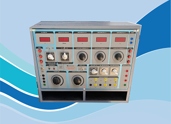

Carga Artificial (Carga Fantasma) — Mod.: PHL-03

É uma unidade de saída trifásica, com potência de 50 VA, que possibilita o ajuste do ângulo de fase entre 0,0 e 360,0 graus entre tensões e correntes mono e trifásicas, medidos em um fasímetro digital de alta precisão incorporado ao equipamento.
Aplicações
Utilizada para simulação de carga mono ou trifásica:
- Em ensaio de medidores de energia;
- Em ensaios de medidores de potência ativa e reativa, fator de potência, sincronoscópio, transformadores e sistemas vetoriais;
- Em conjunto com um contador de tempo mod. ET-42W, pode ser utilizada para testes em relés de distância, direcional de corrente e potência e perda de excitação etc.;
- Variação de ângulo de fase entre tensão e corrente em circuitos vetoriais em que há necessidade do controle do ângulo de fase em sistema trifásico.
Funções de saídas
- Ajuste independente da amplitude a corrente da fase R;
- Ajuste independente da amplitude a corrente da fase S;
- Ajuste independente da amplitude a corrente da fase T;
- Ajuste da amplitude da tensão trifásica;
- Ajustes para controle da relação do ângulo de fase entre a saída de tensão trifásica equilibrada e as saídas das correntes das três fases, ajustáveis independentemente;
- Obter na saída uma corrente trifásica, balanceada e com amplitude variável independente;
- Obter na saída uma tensão trifásica, balanceada e com amplitude variável.
Características técnicas
- Alimentação: (120 - 208 - 240 - 380) V / 60 Hz / 3F (50 Hz) ou (220 - 380 - 440) V / 60 Hz / 3F (50 Hz)
- Ajuste grosso: em seis passos de 60 graus entre 0 e 360 graus
- Ajuste fino: ângulo continuamente ajustável, dentro de cada passo, com resolução menor que 0,5 graus
- Saída de corrente R, S, T: corrente ajustável de 0 a 20 A
- Saídas de corrente R', S', T': saídas para acoplamento com as entradas de corrente dos medidores de energia e medidores padrões, ou relés de proteção
- Saída de tensão R, S e T: tensões ajustáveis entre 0 e 440 V / 50 VA
- Saídas de tensão R, S, T: saídas para acoplamento com as entradas de tensão dos medidores de energia e medidores padrões, ou relés de proteção
Instrumentos incorporados
Medidor de ângulo de fase digital
Instrumento adicional para medida do ângulo de fase entre as saídas de tensões e as saídas de correntes.
- Precisão: 1,5 grau + 1 dígito
- Resolução: 0,1 grau
- Faixa de medida: 0,0 a 360,0 graus
- Sinais de entrada — Corrente: 0,1 a 20,0 A; Tensão: 1 V a 500 V
Voltímetro digital
Instrumento adicional para medidas das tensões de saída.
- Precisão: 1,5% + 3 dígitos
- Resolução máxima: 0,1 V
- Escalas: 0,0 a 199,9 Vrms e 0 a 750 Vrms
Amperímetro digital (3 medidores)
Instrumento adicional para medidas das correntes de saída.
- Precisão: 1,5% + 3 dígitos
- Resolução máxima: 0,1 A
- Escalas: 0,0 a 19,99 Arms
Montagem e dimensões
- Proteção: entradas e saídas através de fusíveis
- Montagem: estrutura de alumínio montada em caixa de madeira revestido de fórmica, tampa removível e espaço reservado para cabos e manuais. Próprio para operar em campo ou laboratório.
- Dimensões (A × L × P): 47 × 53 × 33 cm
- Peso: aproximadamente 50 kg